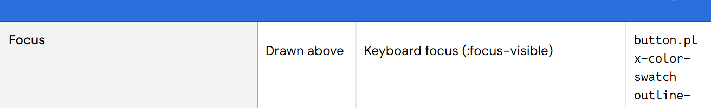
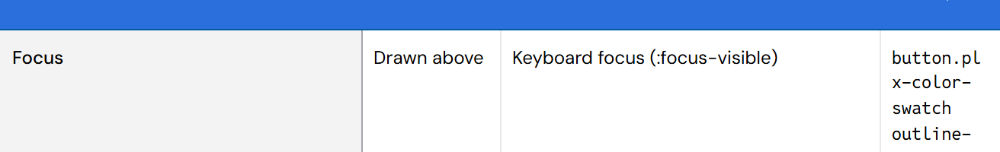
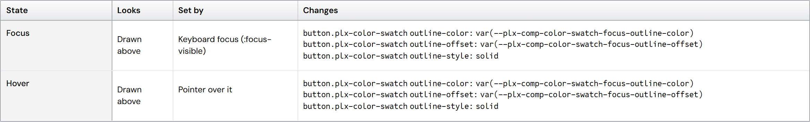
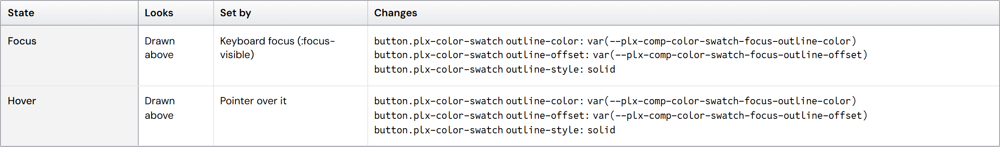

Wrap rows: every cell starts at the top (#256, 1A)
You chose 1A: in the spec's tables with long code, every cell starts at the top. The code columns were already marked as wrap; plain text in a wrap column still sat a line lower than its neighbors.
- Cause: plain wrap text took its top padding twice, once from the row and once from its own box. The row label and drawn cells took it once.
- Fix: a wrap row pads its cells once, so every cell's first line starts at the same top. Table and DataGrid (tall rows) alike.
- Test: the first line of every cell in a wrap row is at the same top.
The spec's Color swatch States table


A Table with wrap columns

